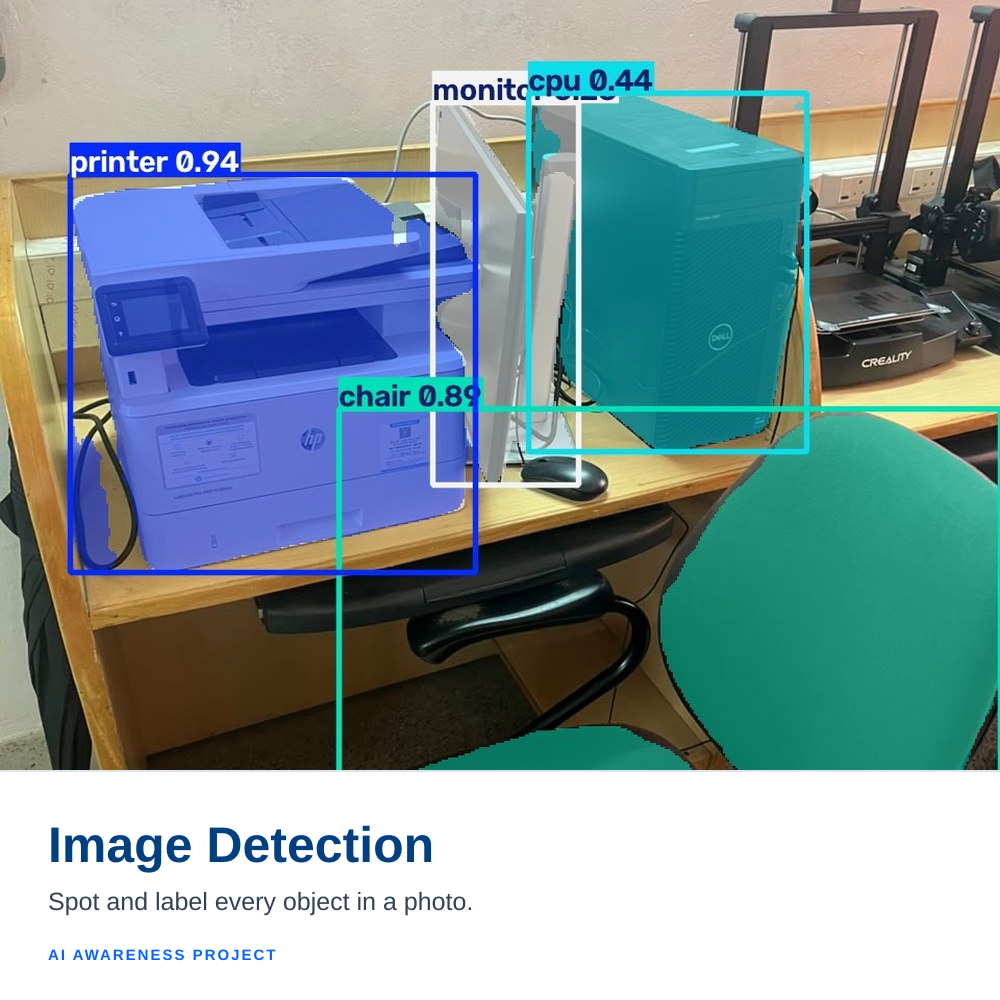

What Does It Do?
Upload a photo and the app finds the objects in it. It draws a box and an exact outline around each one, writes its name, and counts how many of each it found.
You can type what you are looking for, like “charger, bottle, monitor”, or let it detect everything it recognises. Every object gets a confidence score from 0 to 1. The higher the score, the surer the AI is.
How Does a Computer “See” Objects?
To a computer, a photo is just millions of coloured dots (pixels). The AI model scans the whole photo in one go and answers two questions for every part of it:
- Where is it? It draws a bounding box around the object, and an exact outline called a segmentation mask that colours in the object's shape.
- What is it? It turns each part of the photo into a list of numbers, a kind of “fingerprint” of what that part looks like.
How Does It Know What Things Are Called?
The words are turned into fingerprints too. A picture of a printer and the word “printer” end up with very similar fingerprints, so the AI can match parts of the photo to words. How close the match is becomes the confidence score.
- Find specific objects: you type the words, so it only chooses between a few options. This is the most accurate mode.
- Detect everything: it checks against its own list of 4,585 object names. There's nothing to type, but with so many names to choose from it makes more mistakes.
The score shows how sure the AI is, not whether it is right. A side-on monitor or an unusual object can get a low score or the wrong name.
How Does It All Work Together?
Here’s what happens step by step:
- You upload a photo (drag it in or click to choose).
- You type the objects to find, or choose “Detect everything”.
- You set the minimum confidence with a slider.
- The AI model finds the objects and scores each match.
- The app shows the photo with boxes, outlines and labels, plus a count of each object and a table of every detection.
Features of the Project
- Finds any object you can describe in words, not just a fixed list.
- Finds and counts every one, e.g. all the chargers on a desk.
- Boxes, labels, confidence scores and exact outlines for each object.
- Adjustable confidence threshold and a downloadable result image.
- Runs fully on the computer: photos are never uploaded or saved.
Where Is Object Detection Used?
The same idea, finding and naming objects in pictures, is used all around us:
- Self-driving cars spot people, vehicles, traffic lights and road signs.
- Phone cameras find faces to focus on, and apps can identify plants or products.
- Helping visually impaired people: apps describe what's in front of the camera out loud.
- Shops and warehouses count stock on shelves and track packages.
- Hospitals use it to help doctors spot things in X-rays and scans.
- Farms and wildlife: counting animals and finding sick crops from drone photos.
Like any AI, it can make mistakes, especially with unusual objects, poor lighting or things partly hidden, so important decisions still need a person to check.
Built With
- Python
- Flask
- Ultralytics YOLOE-26
- PyTorch
- Pillow
- NumPy